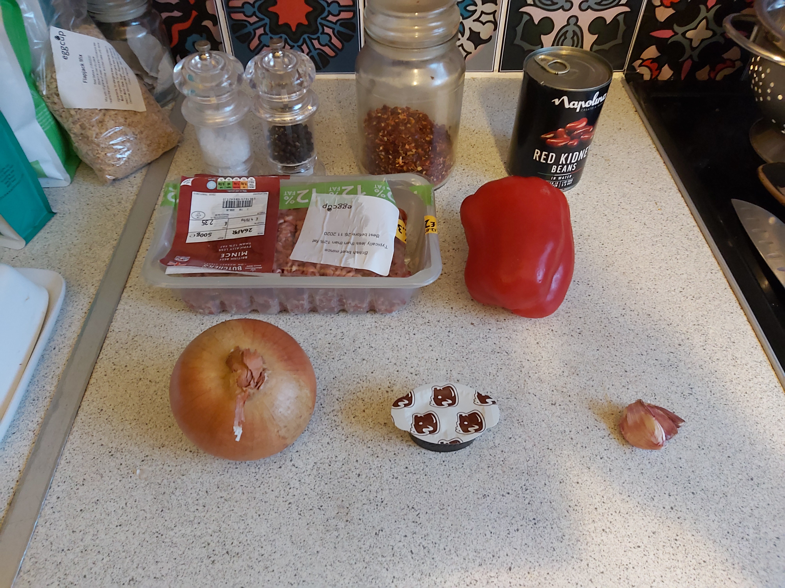
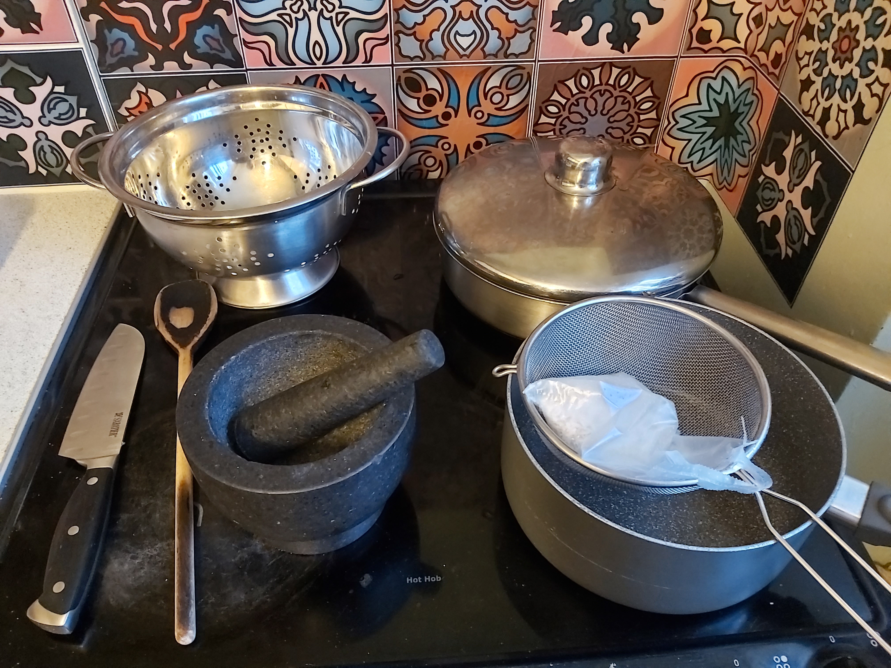
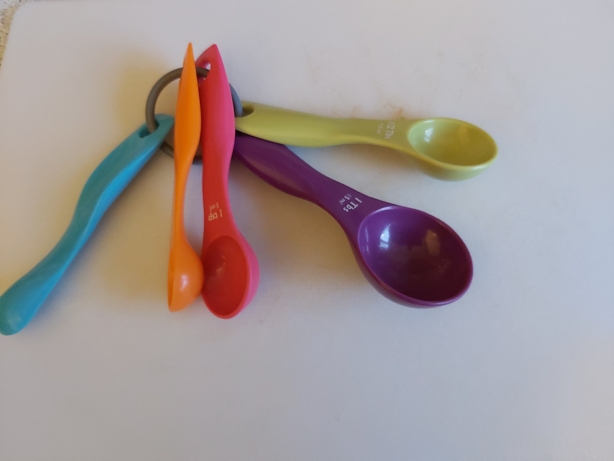

Chili con carne
Ingredients

- 1 Large Onion
- Garlic 2+ cloves
- Low fat beef mince 250g or bigger
- 1 Tin Chopped Tomatoes
- 1 Beef Stockpot
- 1 Tin Red Kidney Beans in Water
- 1 Tablespoon Chili Flakes
- 1 Red Pepper (optional)
- Salt and Pepper.
- Vegetable Oil

Method
Tools

These are pretty essential for anything you cook.
- At least one good large sharp knife
- At least one wooden spoon
- A Pestle and Mortar
- A Colander
- A good saucepan with a lid
- A good size pan
- A seive
Top Tip

Get yourself one of these measuring spoons, they are super handy
Instructions
- Peel and crush the garlic in the pestle and mortar
- Peel and chop the onion
- Drain the kidney beans in the colander
- Put the saucepan on a medium heat and add a tablespoon of vegetable oil
- Once the oil is hot add the garlic and onions and fry for a couple of minutes
- Add the mince to the saucepan and fry for a couple of minutes
- Add the beef stock potand stir it in
- Add 1 tablespoon of chili flakes and sitr them in
- If you're using the peppear then add that, finely chopped
- Add the kidney beans
- Add the Tomatoes and stir for around 3 minutes
- Put the lid on the saucepan
- Boil some water for the rice and add it to the pan
- Put the rice on to boil (boil in the bag stuff is easiest)
- While the rice is cooking give the chili a stir every five minutes or so
- Drain the rice and you are ready to serve your food